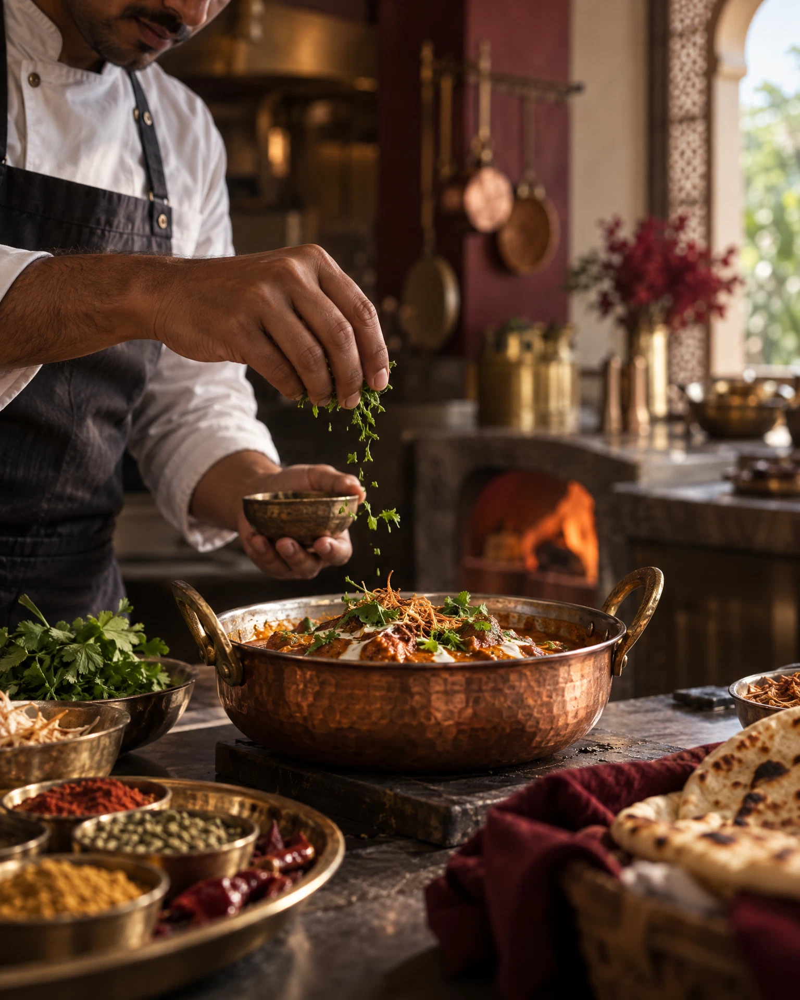
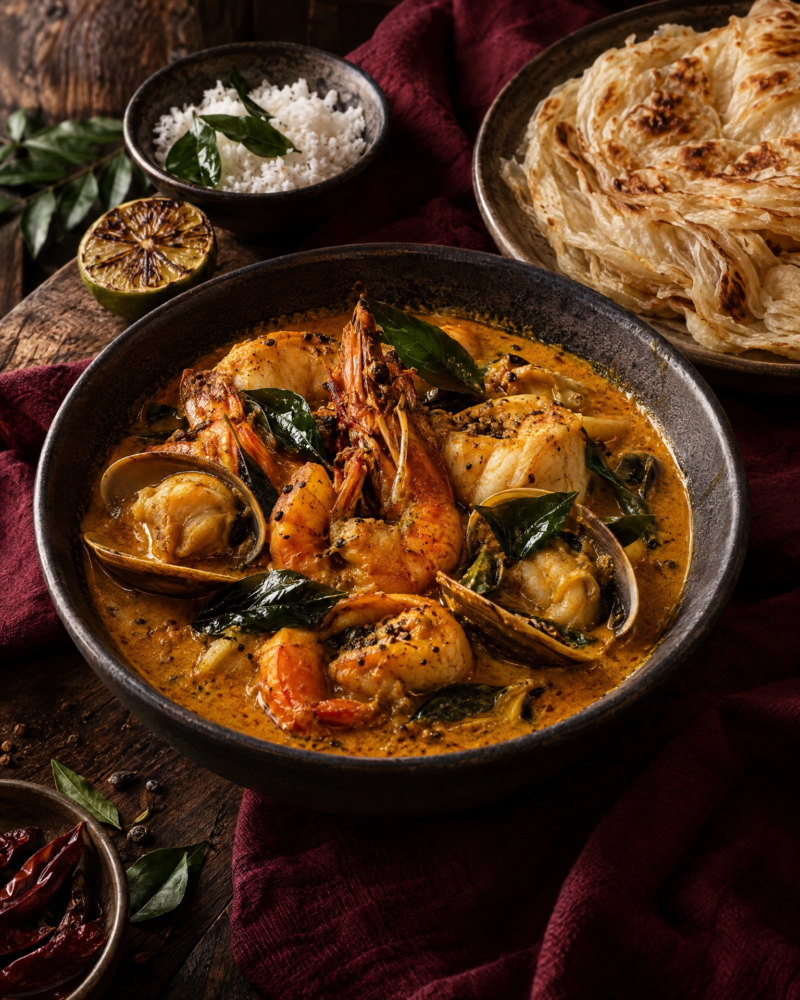
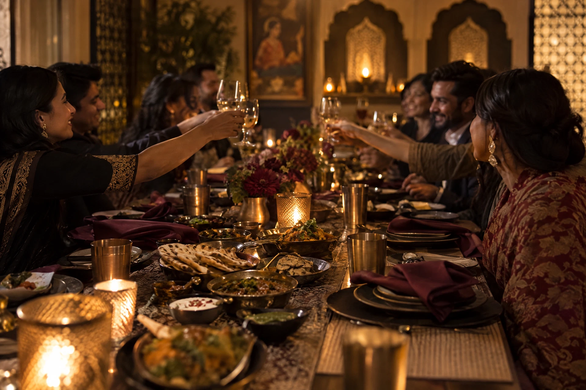
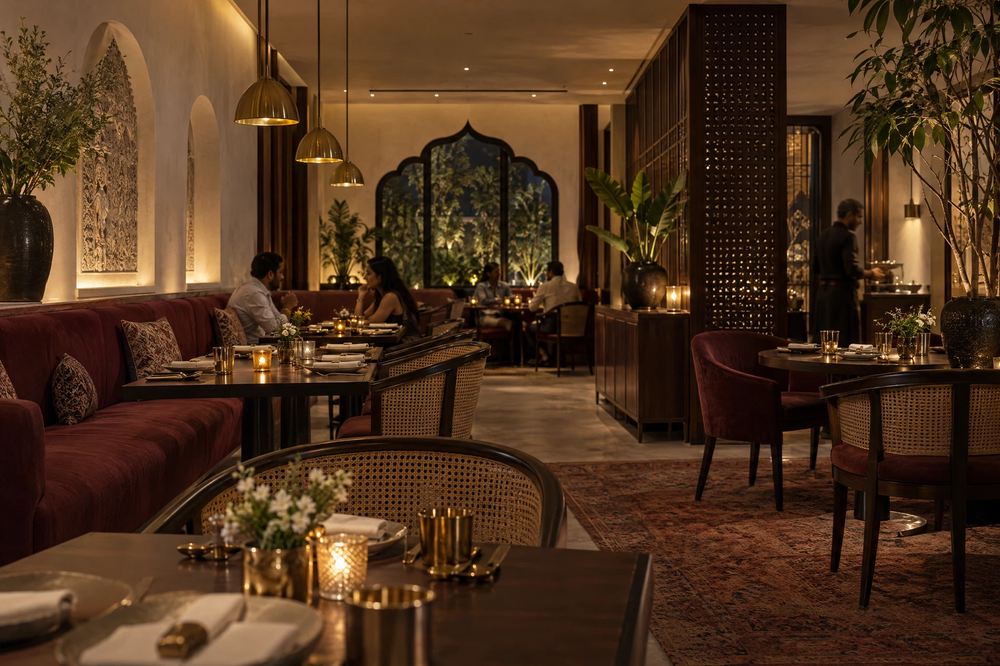

Kerala prawn moilee
Coconut, green chilli, curry leaf
01 / 04
A little fire. A little nostalgia. A generous table set for the stories we bring with us.
Wilton is a modern Indian dining room shaped by the places, people, and passing plates that made us fall in love with food.
We cook with the familiar in mind, then take one small step sideways. Coastal spice meets city rhythm. Old recipes get a new point of view. Everything arrives with warmth, intention, and a little room for surprise.
Our point of view ↗
The small details matter.“The best meals leave a little of themselves behind.”
Good food travels. These are the places our guests keep sending us.
Sea, smoke, and a generous squeeze of lime. Our signature curry is a slow conversation between the coast and the city.
Ask what’s in the clay pot tonight — we’ll tell you where it came from, how we cooked it, and what to order alongside.
Book your table ↗
Today’sOur kitchen is a place for questions. What happens if we leave the spice whole? What if the richest thing on the plate is the simplest?
We follow the ingredient, keep the ego out of the way, and let time do some of the talking.
Meet the people behind Wilton ↗
02 / the pour
05 / the doorFollow the evening from the first knife on the board to the last story at the table.
Scroll through service ↓Drop in for a quick plate, settle in for the evening, or save us for a special occasion.
Reserve a table ↗Tue — Thu 12:00 — 23:00
Fri — Sun 12:00 — 00:00
Closed Mondays